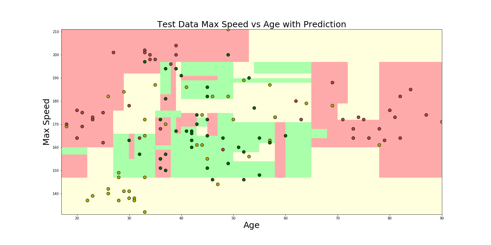
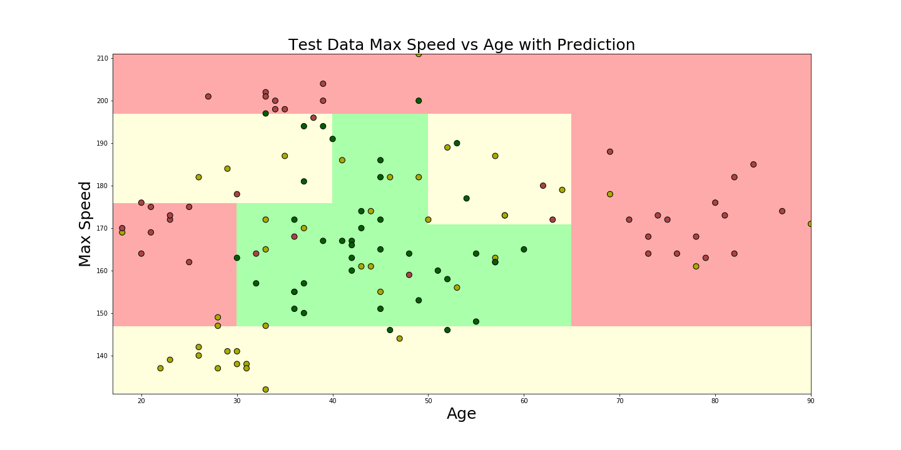

Understanding Machine Learning by looking at visualizations of decision boundaries
Oliver Zeigermann / @DJCordhose
Slides: http://bit.ly/scipy-ml-vizOur Example

Likelyhood of a car crash
How do we automatically predict the quality of a driver?
-
dark (green): few accidents
-
light (yellow): some accidents
-
middle (red): many accidents
E.g., how would you rank me (47) for a car with 160 km/h top speed?
KNN: k Nearest Neighbors
A classic Machine Learning Strategy

Computed results for k = 1

approx. 98% accuracy on data, great result!
Plot Twist
Why predicting data that we already know?
Generalisation, not perfect reproduction is the objective
Revisiting Computed results for k = 1
approx. 98% accuracy on train data, but only 65% on validation data
This is what we call Overfitting
Computed results for k = 13

only approx. 81% accuracy on train data, but also 75% on test data
Regularisation by increasing neighbors
A Second classic: Decision Trees

Decision tree trained on our data
Overfitting using Decision Trees
approx. 98% accuracy on train data, but only 61% on validation data
Reduced overfitting for Decision Trees
only approx. 77% accuracy on train data, but also 68% on validation data
Regularisation by clipping the decision tree